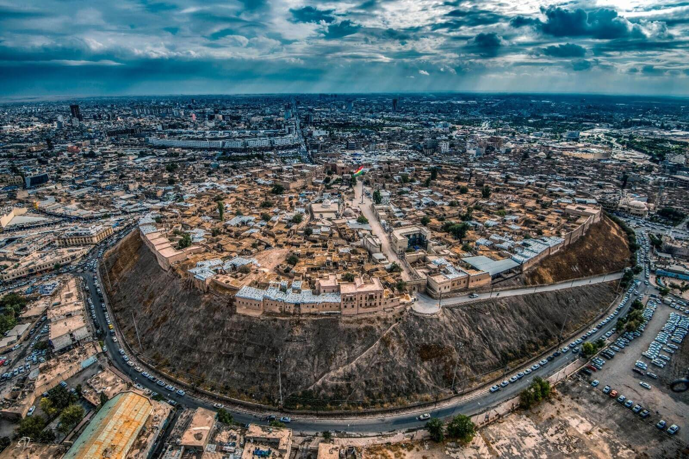

Présentation
Le Kurdistan s'agit d'une région fédérée semi-autonome de la république d'Irak. Elle comprend quatre gouvernorats à majorité kurde au sein de l'Irak à majorité arabe : le gouvernorat d'Erbil,
le gouvernorat de Souleimaniye, le gouvernorat de Dohok et le gouvernorat de Halabja.
Située dans le nord de l'Irak, elle partage des frontières avec l'Iran à l'est,
la Turquie au nord et la Syrie à l'ouest.
C'est une région montagneuse,
il est riche en histoire, en paysages naturels et en traditions culturelles. Ce site vous
invite à découvrir quelques lieux remarquables comme la citadelle d'Erbil, les villages anciens
comme Amedi et les gorges spectaculaires de Rawanduz.

Erbil - La capitale historique
Erbil est la capitale du Kurdistan. C'est une ville moderne avec une citadelle très ancienne au centre. La citadelle existe depuis 8000 ans ! C'est l'une des plus vieilles villes du monde qui est encore habitée.
À voir à Erbil :
- La citadelle ancienne avec vue sur la ville
- Le grand bazar pour acheter des souvenirs
- Les parcs modernes pour se promener
- Les musées sur l'histoire kurde
- Les mosquées historiques
En savoir plus sur Erbil
Amedi - La ville dans les nuages
Amedi est une ville unique construite sur une grande roche plate, très haut dans les montagnes. On l'appelle "la ville dans les nuages" car elle est à 1400 mètres de hauteur. Pour entrer dans la ville, il faut passer par une porte creusée dans la roche.
À voir à Amedi :
- La porte naturelle creusée dans la roche
- Les ruines du château avec vue panoramique
- Les maisons en pierre traditionnelles
- Les sites religieux historiques
- Les paysages de montagne spectaculaires
En savoir plus sur Amedi
Rawanduz - Le paradis des montagnes
Rawanduz est une belle ville de montagne connue pour ses paysages magnifiques. Il y a une grande cascade, un lac bleu et un canyon impressionnant. C'est l'endroit parfait pour se reposer et profiter de la nature.
À voir à Rawanduz :
- La cascade Gali Ali Beg de 800 mètres de haut
- Le canyon profond avec la rivière au fond
- Le lac de Dukan pour les activités nautiques
- Le téléphérique avec vue sur les montagnes
- Les sources chaudes naturelles
En savoir plus sur Rawanduz
Pour en savoir plus sur le Kurdistan